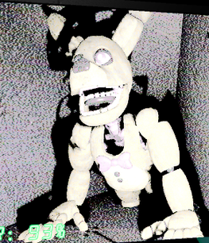

Sistemas clave de jugabilidad
Lo más difícil fue desarrollar las cámaras, el sistema de movimiento de los animatrónicos, el funcionamiento de la puerta y las mecánicas de defensa. Cada uno de estos sistemas necesitaba responder bien por separado y también integrarse entre sí para sostener la tensión del juego.